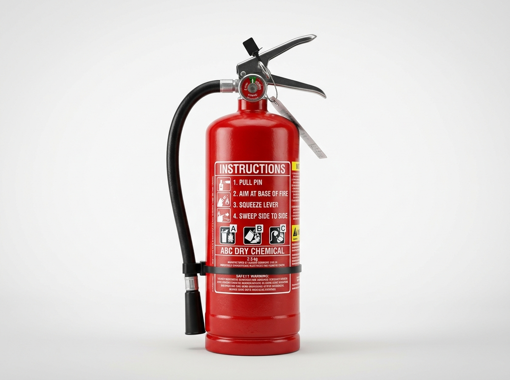

Anexos Técnicos y Evaluación
Glosario de conceptos inmersivos, banco interactivo de preguntas para brigadistas, especificaciones de hardware y registro de activos visuales.
Anexo A: Cuestionario de Evaluación de Competencias en Combate de Incendios
Pon a prueba tus conocimientos sobre los protocolos y física del simulador virtual:
Anexo B: Glosario Técnico de Tecnologías Inmersivas y Seguridad
6 DoF (Six Degrees of Freedom)
Capacidad de un sistema inmersivo de rastrear tanto la rotación angular (cabeceo, guiñada y balanceo) como la traslación espacial física del usuario en los ejes X, Y y Z.
Protocolo P.A.S.S.
Nemotecnia internacional establecida por la NFPA: Pull (Tirar del pasador), Aim (Apuntar a la base), Squeeze (Apretar gatillo) y Sweep (Barrer en abanico horizontal).
Retroalimentación Háptica
Estímulos táctiles generados por motores de masa excéntrica o actuadores lineales en los controladores para transmitir sensaciones físicas de impacto, resistencia mecánica y vibración presurizada.
Conato de Incendio
Fase inicial de un fuego localizada y de reducidas proporciones que puede ser extinguida mediante el uso de extintores portátiles antes de propagarse.
Inside-Out SLAM Tracking
Algoritmo de localización y mapeo simultáneo ejecutado mediante las 4 cámaras monocromáticas del Meta Quest 2 que triangulan el entorno físico sin marcadores externos.
Polvo Químico Seco (PQS ABC)
Agente compuesto fundamentalmente por fosfato monoamónico silanizado que extingue el fuego al descomponerse endotérmicamente e interrumpir la reacción en cadena de los radicales libres.
Anexo C: Registro de Activos Gráficos y Multimedia

meta_quest_2.jpg
Visor VR y mandos Touch en laboratorio de cómputo.

extintor.jpg
Extintor reglamentario con manómetro y etiqueta técnica.

incendio.jpg
Simulacro presencial con humo y fuego en instalaciones.

captura_simulador.jpg
Vista en primera persona del simulador interactivo.